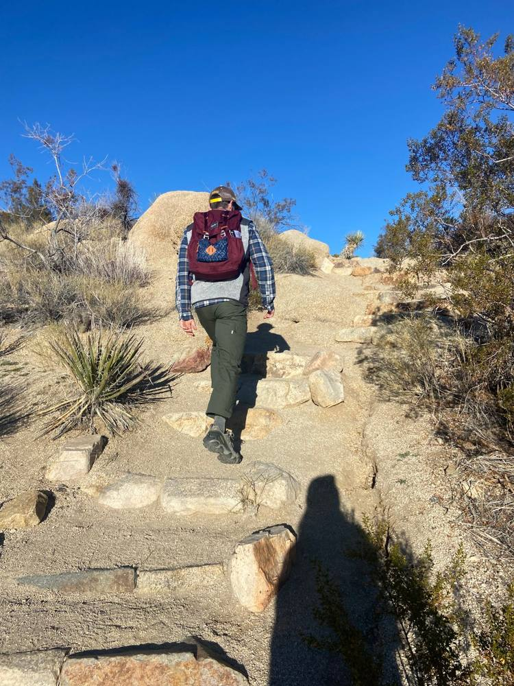
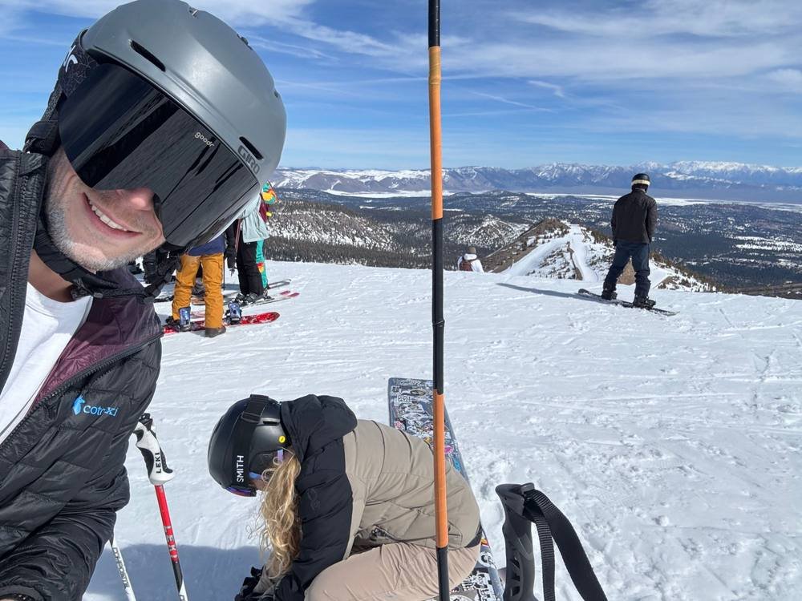
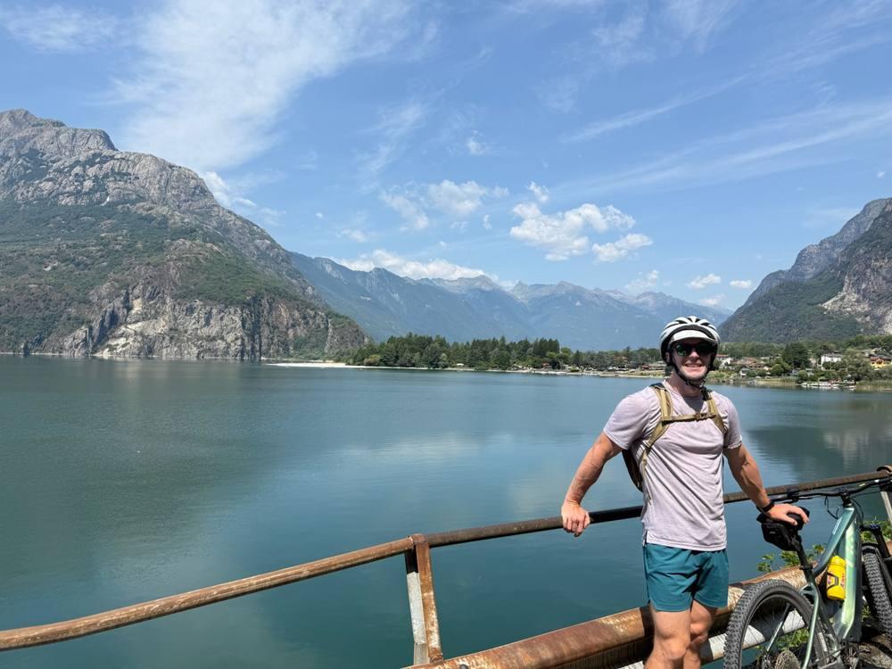

01
Commercial strategy
Decide where the product can win before spending to sell it.
- Segment and buyer prioritization
- Competitive positioning
- Pricing and consumable models
- Board- or investor-ready commercial case
Life science consulting · Commercial & technical
I help life science companies decide where a technical product can win, take it to market, and make sure it performs the same way in a customer's hands. A PhD in structural biochemistry and seven years in industry mean I can read the data and the market in the same meeting.
in industry since my PhD, from the bench to commercial leadership
life sciences: discovery tools, diagnostics, and the supply chain behind them
peer-reviewed, two as first author
solved by hand: now teaching a model to do it faster
Consulting
01
Decide where the product can win before spending to sell it.
02
One story a sales team can carry and a customer can believe.
03
Make sure what works in the lab works in the customer's hands.
Working together: scoped projects or part-time advisory, with all client work kept confidential.
Start a conversationHow I got here
I spent the first part of my career solving protein structures, developing assays, and qualifying the suppliers that kept production running. At Iridia, a product was heading toward launch with no one owning the commercial side, so I took it on: positioning, launch planning, investor materials, and the website that told the story. That record is what my consulting is built on, and it is why I can carry a team from the data to the decision without a translator in between.
Scientist
Structures, assays, and supplier QC across academia, genomics, and diagnostics.
Head of Commercial
Go-to-market, launch, and investor materials, then account management in life science.
Technical & Commercial Advisor
Go-to-market and product development engagements for life science teams.
Selected results
Owned positioning, launch operations, and a 30-60-90 day launch plan with 30 days to go, and shaped the pitch deck behind an active fundraise.
Audited the facility on site, negotiated terms, aligned QC specs, and built the forecast that kept production moving without stranded inventory.
Repositioned the company's messaging and directed a full website relaunch, delivered three days ahead of a two-week deadline.
Writing
Field notes on moving from bench science to commercial leadership.
Team 5, Avery Dennison, and the Report Due Before the Plane
October 12, 2026
A pre-trip briefing report on Avery Dennison's Vietnam business, a team that knows manufacturing better than pharma, and what changes when the CAGE boxes have to measure a different kind of company.
Off the clock
Outside of work: skiing, climbing, diving, hiking, rafting, biking, exploring, and all things adventure, most of it somewhere without cell service.
A few recent memories:

Working up a trail in Joshua Tree.

A bluebird day at Mammoth.

A ride through the Lake Como region.
Background
Technical
Senior Scientist
Bio-Techne · IVD immunoassay development
2023 – 2024
Scientist I
Illumina · Protein crystallography
2021 – 2023
Postdoctoral Research Associate
University of Illinois Urbana-Champaign · Structural biology
2019 – 2021
Commercial
Account Manager, Life Science & Specialty Gases
WestAir
2026 – present
Head of Commercial
Iridia · DNA-based supply chain authentication
2025 – 2027
Executive MBA
USC Marshall School of Business
Expected 2027
Ph.D., Biochemistry with Distinction
Loyola University Chicago: Arthur J. Schmitt Fellow; Dumbach Award 2019
2014 – 2019
B.A., Chemistry
Carthage College
2009 – 2013
Publications
2020
Structural basis for the hydrolytic dehalogenation of the fungicide chlorothalonil
Journal of Biological Chemistry, 295(26), 8668–8677. 10.1074/jbc.RA120.013150
2020
(S)-4-Amino-5-phenoxypentanoate designed as a potential selective agonist of the bacterial transcription factor GabR
Protein Science, 29(8), 1816–1828. 10.1002/pro.3905
+ 4 more contributing-author publications